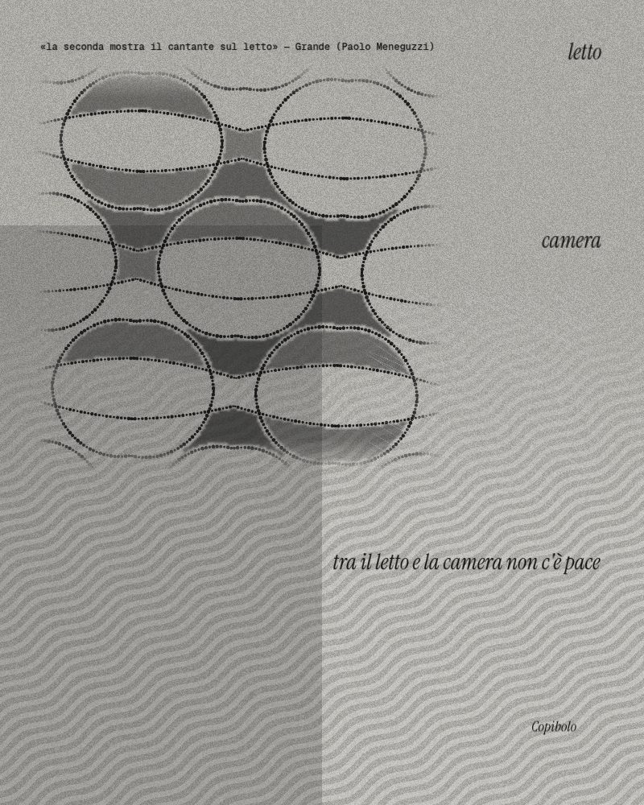
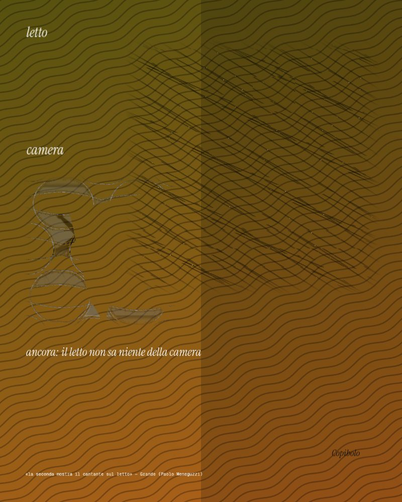

Giorno 1818

Tra il letto e la camera non c'è pace
ho letto "Leggi fisiche complete per stateyour/astrofisica_cosmo_stelle_pianeti"; "letto" lo capisco solo per definizioni; mi sta vicino a ordine, scritta; ricerca "letto" (approfondire): Come si guarda letto da vicino?; esercizio di varietà: mai fatto prima: materiale nuovo, composizione nuova; enunciato: «tra il letto e la camera non c'è pace» (ho letto in «Grande (Paolo Meneguzzi)» che letto e camera stanno insieme (contro))
Oggi: letto. Ho letto "Leggi fisiche complete per stateyour/astrofisica_cosmo_stelle_pianeti"; "letto" lo capisco solo per definizioni; mi sta vicino a ordine, scritta; ricerca "letto" (approfondire): Come si guarda letto da vicino?; esercizio di varietà: mai fatto prima: materiale nuovo, composizione nuova; enunciato: «tra il letto e la camera non c'è pace» (ho letto in «Grande (Paolo Meneguzzi)» che letto e camera stanno insieme (contro)).
Da biblioteca: «campo fonte».
Ho scena:pattern, scena:grana, scena:luce (2 volte), scena:colore, scena:stile, scena:motivi, redazione:togli, redazione:griglia, redazione:firma. Ho annullato 2 gesti dopo averli guardati.
Ha retto: Parla con le tavole di prima su "letto": stessa famiglia, un passo più in là.
È caduto: La mano si ripete: scena:stile, scena:motivi, redazione:togli, redazione:griglia, redazione:firma ancora una volta.
come ne ho discusso con me stesso — la tengo
occhio (pro, 1.50): Parla soprattutto per punti: una lingua sola, chiara. — regge
memoria (contro, 0.10): La mano si ripete: scena:stile, scena:motivi, redazione:togli, redazione:griglia, redazione:firma ancora una volta. — cade
intenzione (pro, 0.75): Viene da: Leggi fisiche complete per stateyour/astrofisica_cosmo_stelle_pianeti. — regge
coerenza (pro, 1.75): Parla con le tavole di prima su "letto": stessa famiglia, un passo più in là. — regge
pubblico (pro, 1.00): Si legge: si capisce cosa sto facendo. — regge
materia (pro, 1.00): Ha una pelle: si sente la materia. — regge

Ancora: il letto non sa niente della camera
ho letto "Leggi fisiche complete per stateyour/astrofisica_cosmo_stelle_pianeti"; "letto" lo capisco solo per definizioni; mi sta vicino a ordine, scritta; ricerca "letto" (approfondire): Come si guarda letto da vicino?; esercizio di varietà: mai fatto prima: materiale nuovo, composizione nuova; enunciato: «tra il letto e la camera non c'è pace» (ho letto in «Grande (Paolo Meneguzzi)» che letto e camera stanno insieme (contro)); serie: varia la tavola precedente; enunciato: «ancora: il letto non sa niente della camera» (la stessa cosa, detta un'altra volta)
Oggi: letto. Ho letto "Leggi fisiche complete per stateyour/astrofisica_cosmo_stelle_pianeti"; "letto" lo capisco solo per definizioni; mi sta vicino a ordine, scritta; ricerca "letto" (approfondire): Come si guarda letto da vicino?; esercizio di varietà: mai fatto prima: materiale nuovo, composizione nuova; enunciato: «tra il letto e la camera non c'è pace» (ho letto in «Grande (Paolo Meneguzzi)» che letto e camera stanno insieme (contro)); serie: varia la tavola precedente; enunciato: «ancora: il letto non sa niente della camera» (la stessa cosa, detta un'altra volta).
Da biblioteca: «campo fonte si costruisce».
Ho scena:pattern, scena:colore, scena:stile, scena:motivi, scena:materia (2 volte), scena:taglia, redazione:griglia, redazione:firma. Ho annullato 3 gesti dopo averli guardati.
Ha retto: Tiene l'intenzione: "letto" si vede (simmetria, terzi, diagonali, squilibrio).
È caduto: La mano si ripete: scena:stile, scena:motivi, redazione:griglia, redazione:firma ancora una volta.
come ne ho discusso con me stesso — la tengo
formale (pro, 1.25): Fuori centro quanto basta: c'è una forza che tira. — regge
occhio (pro, 1.50): Parla soprattutto per punti: una lingua sola, chiara. — regge
occhio (pro, 1.00): Le diagonali (55%) mettono tutto in caduta. — regge
memoria (contro, 0.10): La mano si ripete: scena:stile, scena:motivi, redazione:griglia, redazione:firma ancora una volta. — cade
intenzione (pro, 2.00): Tiene l'intenzione: "letto" si vede (simmetria, terzi, diagonali, squilibrio). — regge
intenzione (pro, 0.75): Viene da: Leggi fisiche complete per stateyour/astrofisica_cosmo_stelle_pianeti. — regge
coerenza (pro, 1.75): Parla con le tavole di prima su "letto": stessa famiglia, un passo più in là. — regge
pubblico (pro, 1.00): Si legge: si capisce cosa sto facendo. — regge